This is a compendium of questions arisen on the use of the tidyterra package and the potential solutions to it (mostly related with the use of terra and ggplot2 at this stage). You can ask for help or search previous questions in the following links.
You can also ask in Stack
Overflow using the tag tidyterra.
Example data
Source
This article uses a sample of LiDAR for Scotland Phase 5 - DSM provided by The Scottish Remote Sensing Portal. This data is made available under the Open Government Licence v3.
About the file
The file holyroodpark.tif represents the DEM1 of Holyrood Park,
Edinburgh (Scotland), including Arthur’s Seat,
an extinct volcano, pretty much as the famous Maungawhau
/ Mount Eden volcano represented in
datasets::volcano.
The original file has been cropped and down-sampled for demo
purposes, holyroodpark.tif is available online in https://github.com/dieghernan/tidyterra/tree/main/data-raw
folder.
NA values are shown in gray color
This is the default behavior produced by the ggplot2
package. tidyterra color scales (i.e.,
scale_fill_whitebox_c(), etc.), has by default the
parameter na.value set to "transparent", that
prevents NA values to be filled2.
library(terra)
library(tidyterra)
library(ggplot2)
# Get a raster data from Holyrood Park, Edinburgh
holyrood <- "holyroodpark.tif"
r <- holyrood %>%
rast() %>%
filter(elevation > 80 & elevation < 180)
# Default
def <- ggplot() +
geom_spatraster(data = r)
def +
labs(
title = "Default on ggplot2",
subtitle = "NA values in grey"
)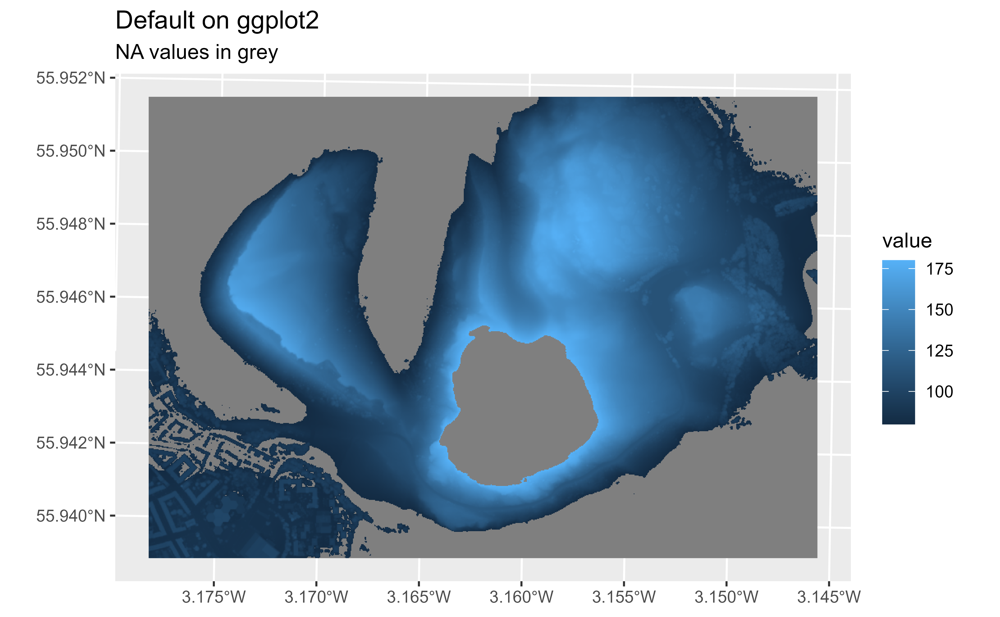
# Modify with scales
def +
scale_fill_continuous(na.value = "transparent") +
labs(
title = "Default colors on ggplot2",
subtitle = "But NAs are not plotted"
)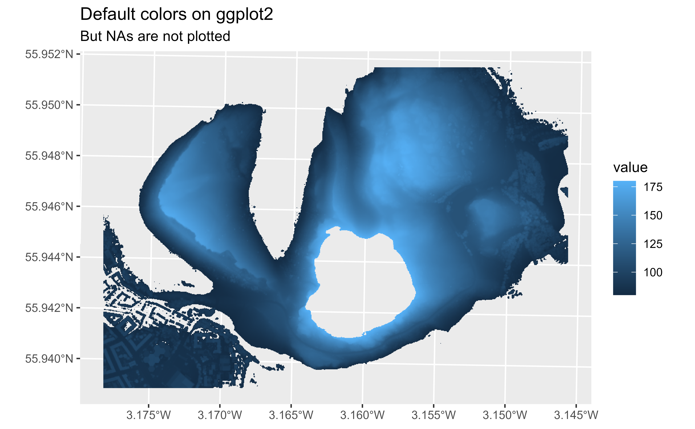
# Use a different scale provided by ggplot2
def +
scale_fill_viridis_c(na.value = "orange") +
labs(
title = "Use any fill_* scale of ggplot2",
subtitle = "Note that na.value = 'orange'"
)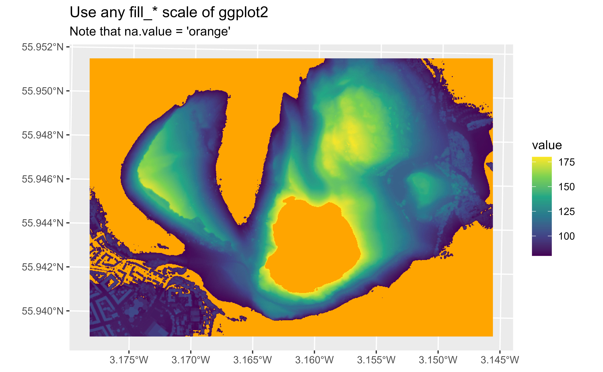
Labeling contours
Use geom_spatraster_contour_text()  :
:
library(terra)
library(tidyterra)
library(ggplot2)
holyrood <- "holyroodpark.tif"
r <- rast(holyrood)
ggplot() +
geom_spatraster_contour_text(data = r) +
labs(title = "Labelling contours")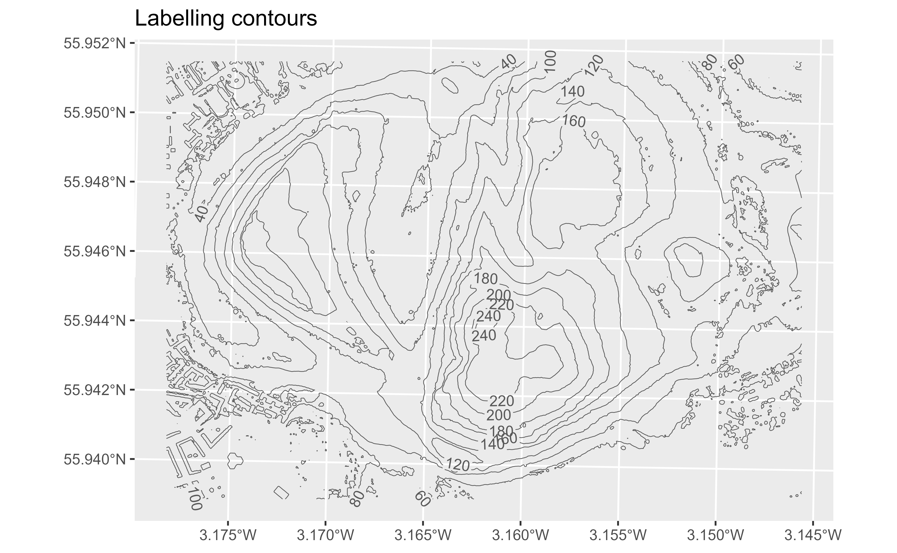
# With options and aes
# Use a labeller function so only selected breaks are labelled
labeller <- function(labs) {
# Must return a function
function(x) {
x[!x %in% labs] <- NA
scales::label_comma(suffix = " m.")(x)
}
}
# Common labels across ggplot
labs <- c(100, 140, 180, 220)
ggplot(r) +
geom_spatraster_contour_text(
data = r, aes(
linewidth = after_stat(level),
size = after_stat(level),
color = after_stat(level)
),
breaks = seq(100, 250, 10),
# Just label some isolines
label_format = labeller(labs = labs),
family = "mono",
fontface = "bold"
) +
scale_linewidth_continuous(range = c(0.1, 0.5), breaks = labs) +
scale_color_gradient(low = "grey50", high = "grey10", breaks = labs) +
scale_size_continuous(range = c(2, 3), breaks = labs) +
# Integrate scales
guides(
linewidth = guide_legend("meters"),
size = guide_legend("meters"),
color = guide_legend("meters")
) +
# Theme and titles
theme_bw() +
theme(text = element_text(family = "mono")) +
labs(
title = "Labelling contours",
subtitle = "With options: b/w plot"
)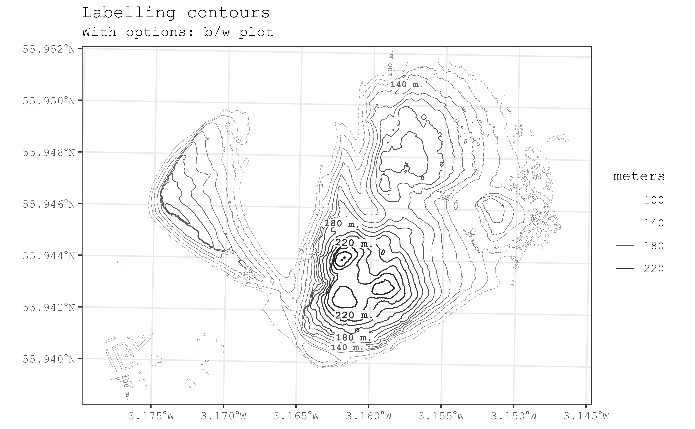
Other alternatives
Thanks to fortify.SpatRaster() you can use your
SpatRaster straight away with the metR
package (see Hexagonal grids and other geoms). Use
the parameter(s) bins/binwidth/breaks to align both labels
and lines:
library(metR)
br <- seq(100, 250, 10)
labs <- c(100, 140, 180, 220)
# Replicate previous map with tidyterra + metR strategy
ggplot(r, aes(x, y)) +
geom_spatraster_contour(
data = r,
aes(
linewidth = after_stat(level),
color = after_stat(level)
),
breaks = br,
# Don't inherit fortified aes
inherit.aes = FALSE
) +
geom_text_contour(
aes(
z = elevation, color = after_stat(level),
size = after_stat(level)
),
breaks = br,
# Text options
check_overlap = TRUE,
label.placer = label_placer_minmax(),
stroke = 0.3,
stroke.colour = "white",
family = "mono",
fontface = "bold",
key_glyph = "path"
) +
scale_linewidth_continuous(range = c(0.1, 0.5), breaks = labs) +
scale_color_gradient(low = "grey50", high = "grey10", breaks = labs) +
scale_size_continuous(range = c(2, 3), breaks = labs) +
# Integrate scales
guides(
linewidth = guide_legend("meters"),
size = guide_legend("meters"),
color = guide_legend("meters")
) +
# Theme and titles
theme_bw() +
theme(text = element_text(family = "mono")) +
labs(
title = "Labelling contours",
subtitle = "tidyterra and metR: b/w plot",
x = "",
y = ""
)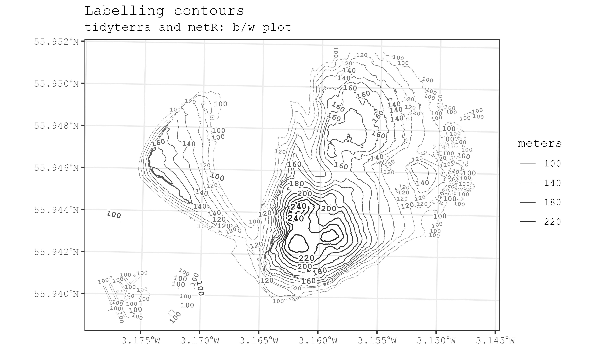
Using a different color scale
Since tidyterra leverages on ggplot2, please refer to ggplot2 use of scales:
library(terra)
library(tidyterra)
library(ggplot2)
holyrood <- "holyroodpark.tif"
r <- rast(holyrood)
# Hillshade with grey colors
slope <- terrain(r, "slope", unit = "radians")
aspect <- terrain(r, "aspect", unit = "radians")
hill <- shade(slope, aspect, 10, 340)
ggplot() +
geom_spatraster(data = hill, show.legend = FALSE) +
# Note the scale, grey colours
scale_fill_gradientn(
colours = grey(0:100 / 100),
na.value = "transparent"
) +
labs(title = "A hillshade plot with grey colors")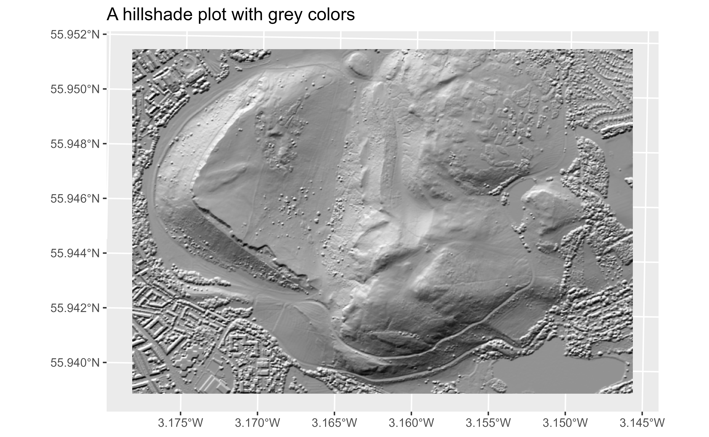
Can I change the default palette of my maps?
Yes, use options("ggplot2.continuous.fill") to modify
the default colors on your session.
library(terra)
library(tidyterra)
library(ggplot2)
holyrood <- "holyroodpark.tif"
r <- rast(holyrood)
p <- ggplot() +
geom_spatraster(data = r)
# Set options
tmp <- getOption("ggplot2.continuous.fill") # store current setting
options(ggplot2.continuous.fill = scale_fill_grass_c)
p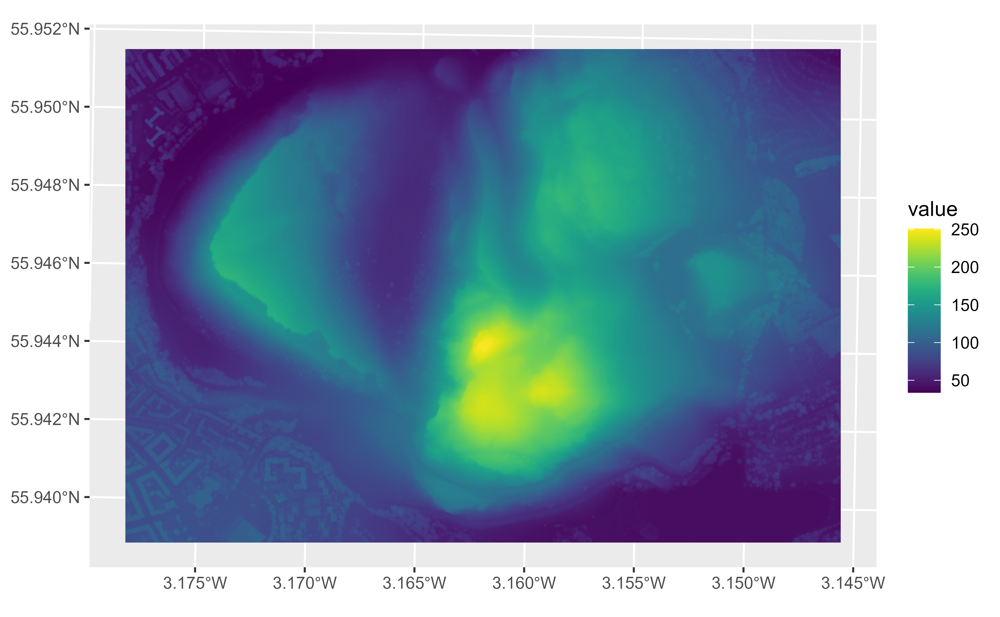
# restore previous setting
options(ggplot2.continuous.fill = tmp)
p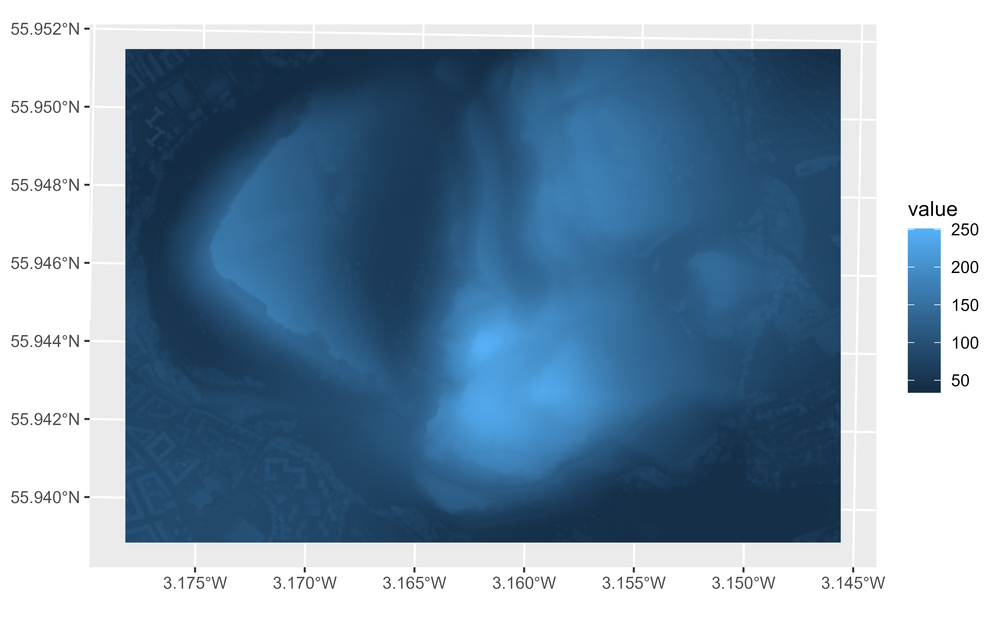
My map tiles are blurry
This is probably related with the tile itself rather than the
package. Most base tiles are provided in EPSG:3857, so
check first if your tile has this CRS and not a different one. Not
having EPSG:3857 may be an indication that the tile has
been reprojected, implied some sort of sampling that causes the
blurriness on your data. Also, modify the parameter maxcell
to avoid resampling and force the ggplot2 map to be on
EPSG:3857 with
ggplot2::coord_sf(crs = 3857):
library(terra)
library(tidyterra)
library(ggplot2)
library(sf)
library(maptiles)
# Get a tile from a point on sf format
p <- st_point(c(-3.166011, 55.945235)) %>%
st_sfc(crs = 4326) %>%
st_buffer(500)
tile1 <- get_tiles(p,
provider = "OpenStreetMap", zoom = 14, cachedir = ".",
crop = TRUE
)
ggplot() +
geom_spatraster_rgb(data = tile1) +
labs(title = "This is a bit blurry...") +
theme_void()
st_crs(tile1)$epsg
#> [1] 4326
# The tile was in EPSG 4326
# get tile in 3857
p2 <- st_transform(p, 3857)
tile2 <- get_tiles(p2,
provider = "OpenStreetMap", zoom = 14, cachedir = ".",
crop = TRUE
)
st_crs(tile2)$epsg
#> [1] 3857
# Now the tile is EPSG:3857
ggplot() +
geom_spatraster_rgb(data = tile2, maxcell = Inf) +
# Force crs to be 3857
coord_sf(crs = 3857) +
labs(title = "...compared with this one") +
theme_void()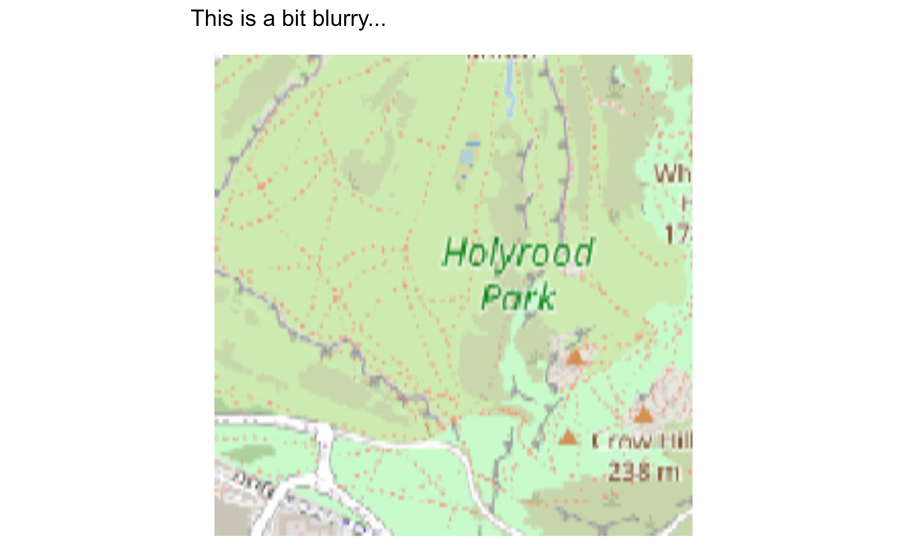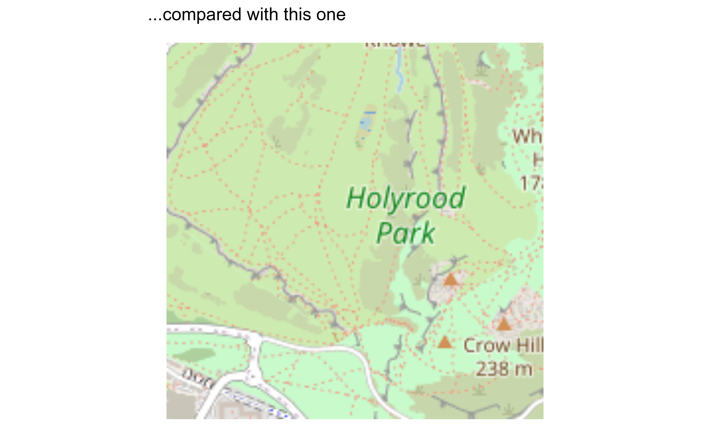
Avoid degrees labeling on axis
Again, this is the ggplot2 default, but can be
modified with ggplot2::coord_sf(datum) argument:
library(terra)
library(tidyterra)
library(ggplot2)
library(sf)
holyrood <- "holyroodpark.tif"
r <- rast(holyrood)
ggplot() +
geom_spatraster(data = r) +
labs(
title = "Axis auto-converted to lon/lat",
subtitle = paste("But SpatRaster is EPSG:", st_crs(r)$epsg)
)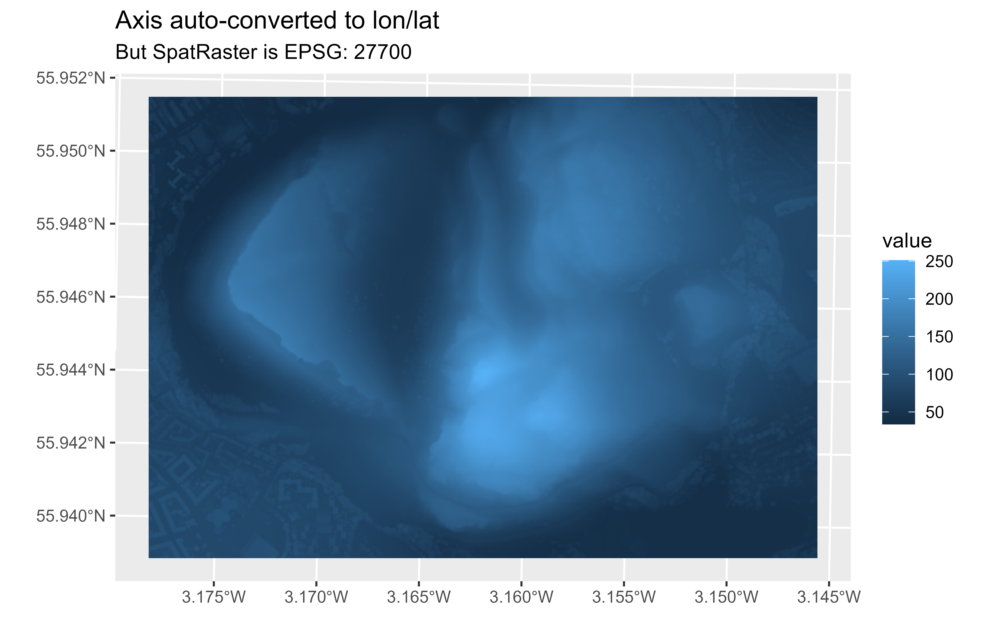
# Use datum
ggplot() +
geom_spatraster(data = r) +
coord_sf(datum = pull_crs(r)) +
labs(
title = "Axis on the units of the SpatRaster",
subtitle = paste("EPSG:", st_crs(r)$epsg)
)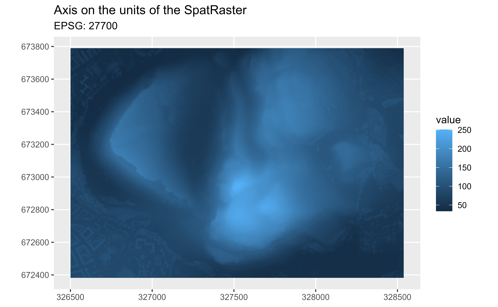
Modifying the number of breaks on axis
This is a long-standing issue in ggplot2 with no satisfactory solution so far. Please see ggplot2/issues/4622 (and maybe consider opening a new issue). You can try something like this:
packageVersion("ggplot2")
#> [1] '4.0.1'
library(terra)
library(tidyterra)
library(ggplot2)
library(sf)
holyrood <- "holyroodpark.tif"
r <- rast(holyrood)
ggplot() +
geom_spatraster(data = r) +
labs(title = "Default axis breaks")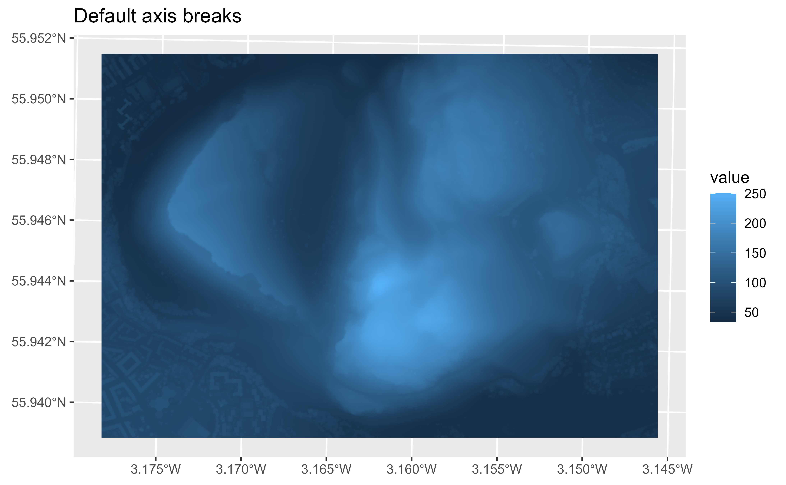
# Modify breaks on x and y
# Need to be in EPSG:4326, but don't know why...
extent <- r %>%
project("EPSG:4326") %>%
ext() %>%
as.vector()
y_br <- pretty(c(extent[c("ymin", "ymax")]), n = 3)
x_br <- pretty(c(extent[c("xmin", "xmax")]), n = 3)
ggplot() +
geom_spatraster(data = r) +
scale_y_continuous(breaks = y_br) +
scale_x_continuous(breaks = x_br) +
labs(title = "Three breaks in x and y axis")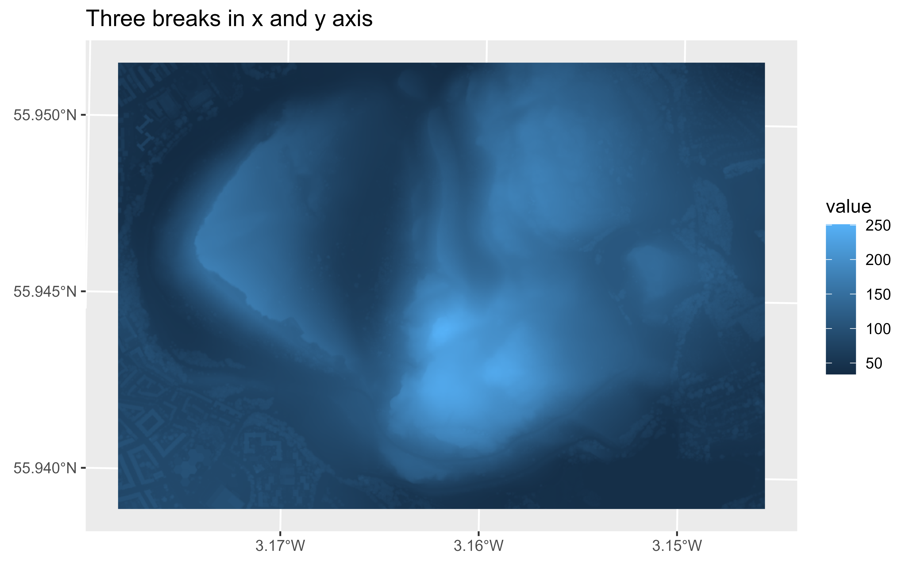
Plotting a SpatRaster with color tables
tidyterra has several ways to handle these
SpatRaster objects. We use the file
clc_edinburgh.tif, available online in https://github.com/dieghernan/tidyterra/tree/main/data-raw
folder, representing the information of the Corine Land Cover Dataset
(2018) for the city of Edinburgh3.
library(terra)
library(tidyterra)
library(ggplot2)
# Get a SpatRaster with coltab
r_coltab <- rast("clc_edinburgh.tif")
has.colors(r_coltab)
#> [1] TRUE
r_coltab
#> class : SpatRaster
#> size : 196, 311, 1 (nrow, ncol, nlyr)
#> resolution : 178.8719, 177.9949 (x, y)
#> extent : -380397.3, -324768.1, 7533021, 7567908 (xmin, xmax, ymin, ymax)
#> coord. ref. : WGS 84 / Pseudo-Mercator (EPSG:3857)
#> source : clc_edinburgh.tif
#> color table : 1
#> categories : label
#> name : label
#> min value : Continuous urban fabric
#> max value : Sea and ocean
# Native handling by terra packages
plot(r_coltab)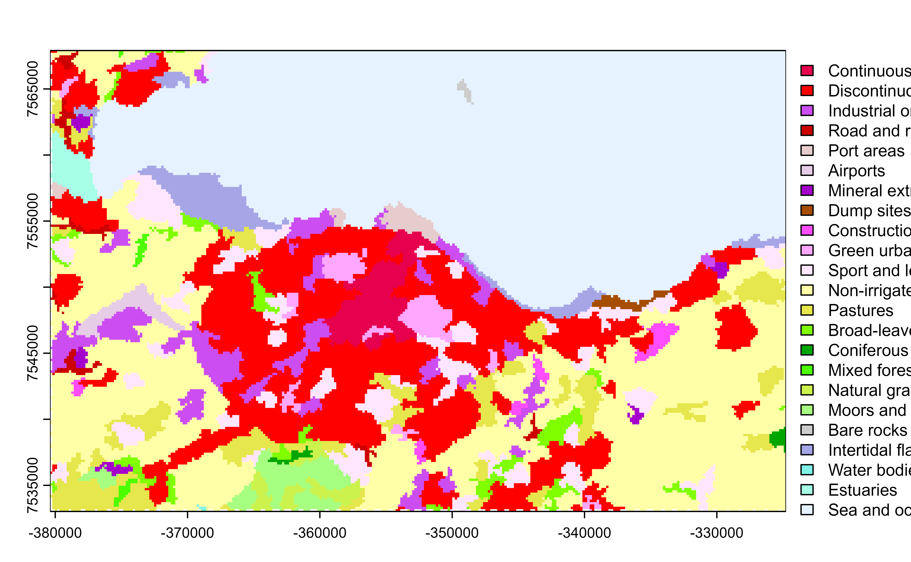
# A. autoplot
autoplot(r_coltab, maxcell = Inf) +
guides(fill = guide_legend(ncol = 1)) +
ggtitle("autoplot method")
# B. geom_spatraster
ggplot() +
geom_spatraster(data = r_coltab, maxcell = Inf) +
guides(fill = guide_legend(ncol = 1)) +
ggtitle("geom_spatraster method")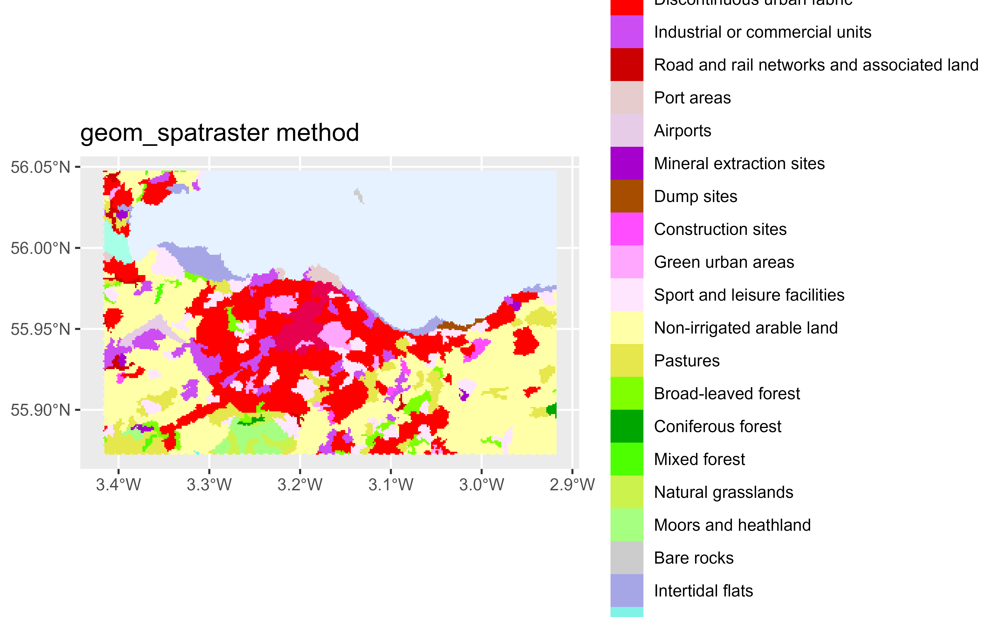
# C. Using scale_fill_coltab
g <- ggplot() +
geom_spatraster(data = r_coltab, use_coltab = FALSE, maxcell = Inf) +
guides(fill = guide_legend(ncol = 1))
g
# But...
g +
scale_fill_coltab(data = r_coltab) +
ggtitle("scale_fill_coltab method")
# D. Extract named colors and scale_fill_manual
cols <- get_coltab_pal(r_coltab)
cols
#> Continuous urban fabric
#> "#E6004D"
#> Discontinuous urban fabric
#> "#FF0000"
#> Industrial or commercial units
#> "#CC4DF2"
#> Road and rail networks and associated land
#> "#CC0000"
#> Port areas
#> "#E6CCCC"
#> Airports
#> "#E6CCE6"
#> Mineral extraction sites
#> "#A600CC"
#> Dump sites
#> "#A64D00"
#> Construction sites
#> "#FF4DFF"
#> Green urban areas
#> "#FFA6FF"
#> Sport and leisure facilities
#> "#FFE6FF"
#> Non-irrigated arable land
#> "#FFFFA8"
#> Pastures
#> "#E6E64D"
#> Broad-leaved forest
#> "#80FF00"
#> Coniferous forest
#> "#00A600"
#> Mixed forest
#> "#4DFF00"
#> Natural grasslands
#> "#CCF24D"
#> Moors and heathland
#> "#A6FF80"
#> Bare rocks
#> "#CCCCCC"
#> Intertidal flats
#> "#A6A6E6"
#> Water bodies
#> "#80F2E6"
#> Estuaries
#> "#A6FFE6"
#> Sea and ocean
#> "#E6F2FF"
scales::show_col(cols)
# And now
g +
scale_fill_manual(
values = cols, na.value = "transparent",
na.translate = FALSE
) +
ggtitle("scale_fill_manual method")Use with gganimate
Sure! See an example (thanks @frzambra):
library(gganimate)
library(tidyterra)
library(geodata)
library(ggplot2)
temp <- worldclim_country("che", "tavg", path = ".")
che_cont <- gadm("che", level = 0, path = ".")
temp_m <- crop(temp, che_cont, mask = TRUE)
names(temp_m) <- month.name
anim <- ggplot() +
geom_spatraster(data = temp_m) +
scale_fill_viridis_c(
option = "inferno",
na.value = "transparent",
labels = scales::label_number(suffix = "º C")
) +
transition_manual(lyr) +
theme_bw() +
theme(
axis.text = element_blank(),
axis.ticks = element_blank()
) +
labs(
title = "Avg temp Switzerland: {current_frame}",
fill = ""
)
gganimate::animate(anim, duration = 12, device = "ragg_png")
North arrows and scale bar
tidyterra does not provide these graphical objects
for ggplot2 plots. However, you can use
ggspatial functions
(ggspatial::annotation_north_arrow() and
ggspatial::annotation_scale()):
library(terra)
library(tidyterra)
library(ggplot2)
library(ggspatial)
holyrood <- "holyroodpark.tif"
r <- rast(holyrood)
autoplot(r) +
annotation_north_arrow(
which_north = TRUE,
pad_x = unit(0.8, "npc"),
pad_y = unit(0.75, "npc"),
style = north_arrow_fancy_orienteering()
) +
annotation_scale(
height = unit(0.015, "npc"),
width_hint = 0.5,
pad_x = unit(0.07, "npc"),
pad_y = unit(0.07, "npc"),
text_cex = .8
)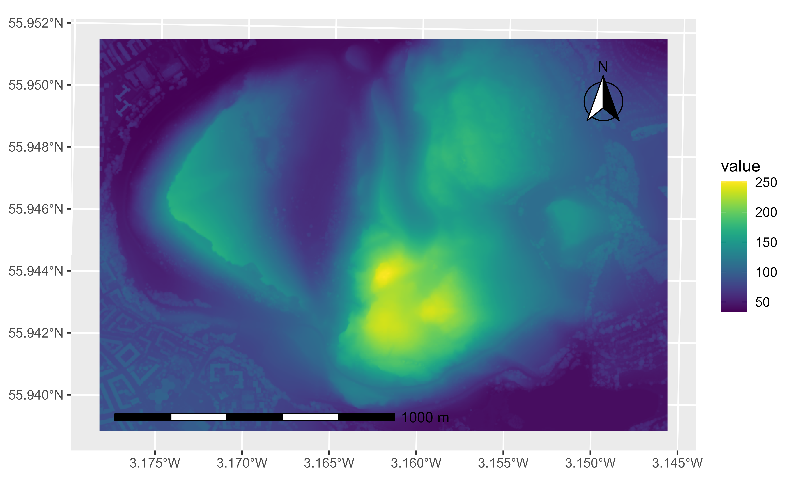
How to overlay a SpatRaster over a RGB tile
This is quite straightforward, just use
geom_spatraster_rgb() and after that command just create
your layer:
library(terra)
library(tidyterra)
library(ggplot2)
library(sf)
# Get example data
library(maptiles)
library(geodata)
# Area of interest
aoi <- gadm(country = "CHE", path = ".", level = 0) %>%
project("EPSG:3857")
# Tile
rgb_tile <- get_tiles(aoi,
crop = TRUE, provider = "Esri.WorldShadedRelief",
zoom = 8, project = FALSE, cachedir = "."
)
# Clim (mean prec)
clim <- worldclim_country("CHE", var = "prec", path = ".") %>%
project(rgb_tile) %>%
mask(aoi) %>%
terra::mean()
# Labels
cap_lab <- paste0(
c(
"Tiles © Esri - Source: Esri",
"Data: © Copyright 2020-2022, worldclim.org."
),
collapse = "\n"
)
tit_lab <- "Average precipitation in Switzerland"
ggplot(aoi) +
geom_spatraster_rgb(data = rgb_tile, alpha = 1) +
geom_spatraster(data = clim) +
geom_spatvector(fill = NA) +
scale_fill_whitebox_c(
palette = "deep", alpha = 0.5,
labels = scales::label_number(suffix = " mm.")
) +
coord_sf(expand = FALSE) +
labs(
title = tit_lab,
subtitle = "With continuous overlay",
fill = "Precipitation",
caption = cap_lab
)
We can create another variations with binned legends and filled
contours (see geom_spatraster_contour_filled()):
# Binned
ggplot(aoi) +
geom_spatraster_rgb(data = rgb_tile, alpha = 1) +
geom_spatraster(data = clim) +
geom_spatvector(fill = NA) +
scale_fill_whitebox_b(
palette = "deep", alpha = 0.5,
n.breaks = 4,
labels = scales::label_number(suffix = " mm.")
) +
coord_sf(expand = FALSE) +
labs(
title = tit_lab,
subtitle = "With overlay: binned legend",
fill = "Precipitation",
caption = cap_lab
)
# Filled contour
ggplot(aoi) +
geom_spatraster_rgb(data = rgb_tile, alpha = 1) +
geom_spatraster_contour_filled(data = clim, bins = 4) +
geom_spatvector(fill = NA) +
coord_sf(expand = FALSE) +
scale_fill_whitebox_d(
palette = "deep", alpha = 0.5,
guide = guide_legend(reverse = TRUE)
) +
labs(
title = tit_lab,
subtitle = "With overlay and filled contour",
fill = "Precipitation (mm.)",
caption = cap_lab
)
Hexagonal grids (and other geoms)
By concept the cells of a SpatRaster are rectangular, so
it is not possible to create a SpatRaster with
i.e. hexagonal cells.
But it is possible to create a plot with hexagonal cells thanks to
fortify.SpatRaster() and stat_summary_hex().
Additional work is needed to adjust the final plot, specifically it is
needed also to use coord_sf():
library(terra)
library(tidyterra)
library(ggplot2)
holyrood <- "holyroodpark.tif"
r <- rast(holyrood)
# With hex grid
ggplot(r, aes(x, y, z = elevation)) +
stat_summary_hex(
fun = mean, color = NA, linewidth = 0,
# Bins size determines the number of cells displayed
bins = 30
) +
coord_sf(crs = pull_crs(r)) +
labs(
title = "Hexagonal SpatRaster",
subtitle = "Using fortify (implicit) and stat_summary_hex",
x = NULL, y = NULL
)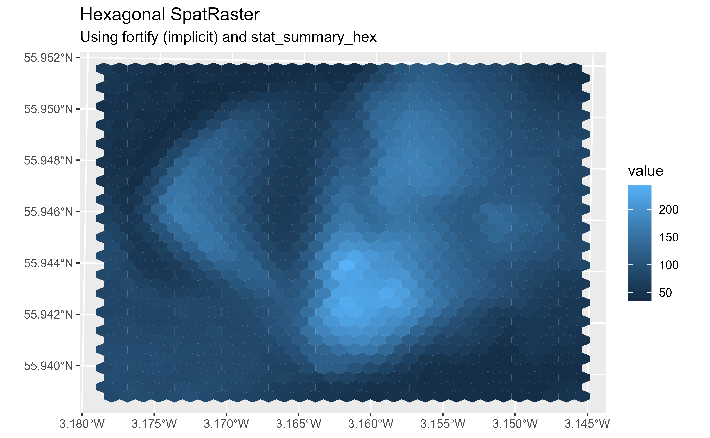
Note that there is no need to make a direct call to
fortify.SpatRaster(), since this function is implicitly
invoked by ggplot2 when using
ggplot(data = a_spatraster).
Thanks to this extension mechanism, it is possible to use additional
geoms and stats provided by
ggplot2:
# Point plot
ggplot(r, aes(x, y, z = elevation), maxcell = 1000) +
geom_point(aes(size = elevation, alpha = elevation),
fill = "darkblue",
color = "grey50", shape = 21
) +
coord_sf(crs = pull_crs(r)) +
scale_radius(range = c(1, 5)) +
scale_alpha(range = c(0.01, 1)) +
labs(
title = "SpatRaster as points",
subtitle = "Using fortify (implicit)",
x = NULL, y = NULL
)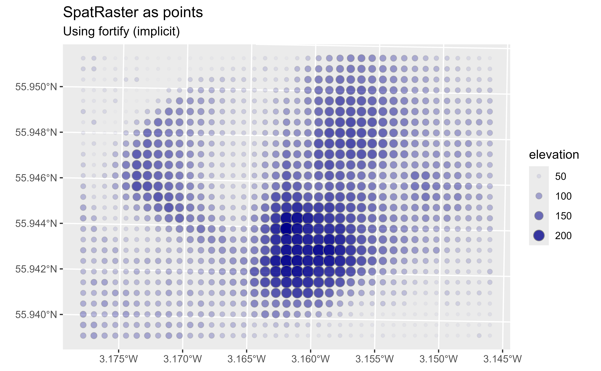
tidyterra and metR
metR is a package that also provides ggplot2 extensions, mainly focused on the analysis of meteorological fields. As shown previously (see Labeling contours) it is possible to use both packages to provide rich plots.
# load libraries and files
library(terra)
library(tidyterra)
library(ggplot2)
library(metR)
holyrood <- "holyroodpark.tif"
r <- rast(holyrood)
ggplot(r, aes(x, y)) +
geom_relief(aes(z = elevation)) +
geom_spatraster(
data = r, inherit.aes = FALSE,
aes(alpha = after_stat(value))
) +
scale_fill_cross_blended_c(breaks = seq(0, 250, 25)) +
scale_alpha(range = c(1, 0.25)) +
guides(alpha = "none", fill = guide_legend(reverse = TRUE)) +
labs(x = "", y = "", title = "tidyterra and metR: reliefs")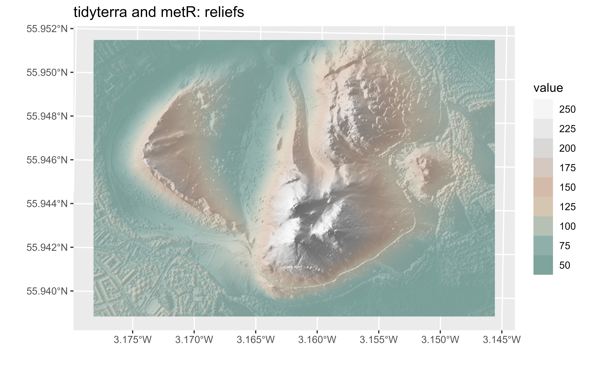
Session info
Details
#> ─ Session info ───────────────────────────────────────────────────────────────
#> setting value
#> version R version 4.5.2 (2025-10-31 ucrt)
#> os Windows Server 2022 x64 (build 26100)
#> system x86_64, mingw32
#> ui RTerm
#> language en
#> collate English_United States.utf8
#> ctype English_United States.utf8
#> tz UTC
#> date 2025-11-18
#> pandoc 3.1.11 @ C:/HOSTED~1/windows/pandoc/31F387~1.11/x64/PANDOC~1.11/ (via rmarkdown)
#> quarto NA
#>
#> ─ Packages ───────────────────────────────────────────────────────────────────
#> package * version date (UTC) lib source
#> backports 1.5.0 2024-05-23 [1] RSPM
#> bslib 0.9.0 2025-01-30 [1] RSPM
#> cachem 1.1.0 2024-05-16 [1] RSPM
#> checkmate 2.3.3 2025-08-18 [1] RSPM
#> class 7.3-23 2025-01-01 [3] CRAN (R 4.5.2)
#> classInt 0.4-11 2025-01-08 [1] RSPM
#> cli 3.6.5 2025-04-23 [1] RSPM
#> codetools 0.2-20 2024-03-31 [3] CRAN (R 4.5.2)
#> data.table 1.17.8 2025-07-10 [1] RSPM
#> DBI 1.2.3 2024-06-02 [1] RSPM
#> desc 1.4.3 2023-12-10 [1] RSPM
#> digest 0.6.38 2025-11-12 [1] RSPM
#> dplyr 1.1.4 2023-11-17 [1] RSPM
#> e1071 1.7-16 2024-09-16 [1] RSPM
#> evaluate 1.0.5 2025-08-27 [1] RSPM
#> farver 2.1.2 2024-05-13 [1] RSPM
#> fastmap 1.2.0 2024-05-15 [1] RSPM
#> fs 1.6.6 2025-04-12 [1] RSPM
#> generics 0.1.4 2025-05-09 [1] RSPM
#> geodata * 0.6-6 2025-09-30 [1] RSPM
#> ggplot2 * 4.0.1 2025-11-14 [1] RSPM
#> ggspatial * 1.1.10 2025-08-24 [1] RSPM
#> glue 1.8.0 2024-09-30 [1] RSPM
#> gtable 0.3.6 2024-10-25 [1] RSPM
#> hexbin 1.28.5 2024-11-13 [1] RSPM
#> htmltools 0.5.8.1 2024-04-04 [1] RSPM
#> isoband 0.2.7 2022-12-20 [1] RSPM
#> jquerylib 0.1.4 2021-04-26 [1] RSPM
#> jsonlite 2.0.0 2025-03-27 [1] RSPM
#> KernSmooth 2.23-26 2025-01-01 [3] CRAN (R 4.5.2)
#> knitr 1.50 2025-03-16 [1] RSPM
#> labeling 0.4.3 2023-08-29 [1] RSPM
#> lattice 0.22-7 2025-04-02 [3] CRAN (R 4.5.2)
#> lifecycle 1.0.4 2023-11-07 [1] RSPM
#> magrittr 2.0.4 2025-09-12 [1] RSPM
#> maptiles * 0.10.0 2025-05-07 [1] RSPM
#> memoise 2.0.1 2021-11-26 [1] RSPM
#> metR * 0.18.2 2025-09-05 [1] RSPM
#> pillar 1.11.1 2025-09-17 [1] RSPM
#> pkgconfig 2.0.3 2019-09-22 [1] RSPM
#> pkgdown 2.2.0 2025-11-06 [1] RSPM
#> plyr 1.8.9 2023-10-02 [1] RSPM
#> png 0.1-8 2022-11-29 [1] RSPM
#> proxy 0.4-27 2022-06-09 [1] RSPM
#> purrr 1.2.0 2025-11-04 [1] RSPM
#> R.cache 0.17.0 2025-05-02 [1] RSPM
#> R.methodsS3 1.8.2 2022-06-13 [1] RSPM
#> R.oo 1.27.1 2025-05-02 [1] RSPM
#> R.utils 2.13.0 2025-02-24 [1] RSPM
#> R6 2.6.1 2025-02-15 [1] RSPM
#> ragg 1.5.0 2025-09-02 [1] RSPM
#> rappdirs 0.3.3 2021-01-31 [1] RSPM
#> RColorBrewer 1.1-3 2022-04-03 [1] RSPM
#> Rcpp 1.1.0 2025-07-02 [1] RSPM
#> rlang 1.1.6 2025-04-11 [1] RSPM
#> rmarkdown 2.30 2025-09-28 [1] RSPM
#> s2 1.1.9 2025-05-23 [1] RSPM
#> S7 0.2.1 2025-11-14 [1] RSPM
#> sass 0.4.10 2025-04-11 [1] RSPM
#> scales 1.4.0 2025-04-24 [1] RSPM
#> sessioninfo * 1.2.3 2025-02-05 [1] any (@1.2.3)
#> sf * 1.0-22 2025-11-10 [1] RSPM
#> slippymath 0.3.1 2019-06-28 [1] RSPM
#> styler 1.11.0 2025-10-13 [1] RSPM
#> systemfonts 1.3.1 2025-10-01 [1] RSPM
#> terra * 1.8-80 2025-11-05 [1] RSPM
#> textshaping 1.0.4 2025-10-10 [1] RSPM
#> tibble 3.3.0 2025-06-08 [1] RSPM
#> tidyr 1.3.1 2024-01-24 [1] RSPM
#> tidyselect 1.2.1 2024-03-11 [1] RSPM
#> tidyterra * 0.7.2.9000 2025-11-18 [1] local
#> units 1.0-0 2025-10-09 [1] RSPM
#> vctrs 0.6.5 2023-12-01 [1] RSPM
#> viridisLite 0.4.2 2023-05-02 [1] RSPM
#> withr 3.0.2 2024-10-28 [1] RSPM
#> wk 0.9.4 2024-10-11 [1] RSPM
#> xfun 0.54 2025-10-30 [1] RSPM
#> yaml 2.3.10 2024-07-26 [1] RSPM
#>
#> [1] D:/a/_temp/Library
#> [2] C:/R/site-library
#> [3] C:/R/library
#> * ── Packages attached to the search path.
#>
#> ──────────────────────────────────────────────────────────────────────────────